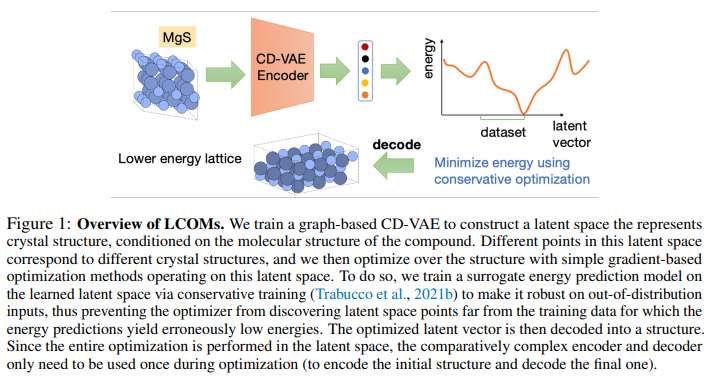
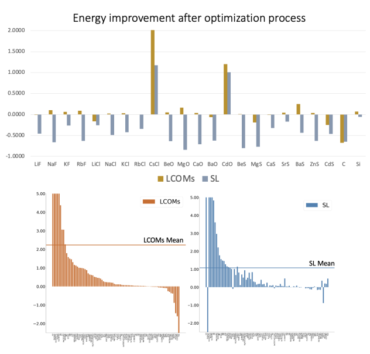

11月に掲載された論文やプレプリントをピックアップして紹介していきます。説明を多めにしています。定期的に更新したいと思います。
論文タイトル一覧
データ駆動型結晶構造予測のための潜在的保守的目的モデル
結晶構造予測（CSP）という難問に対して、既存の結晶構造とエネルギーのデータセットから学習した潜在的保守的目的モデル（LCOMs）という新しい手法を提案した。LCOMsは、結晶構造を潜在空間に変換するために、周期性を持つ固体材料に対する生成モデルである結晶拡散変分オートエンコーダー（CD-VAE）を利用した。潜在空間での最適化において、学習したエネルギー予測モデルが誤った低エネルギーを出力することを防ぐために、保守的目的モデル（COMs）というロバスト化手法を適用した。また、26種類の化合物に対して、最も安定な結晶構造を発見する成功率が高く、既存の手法と同等かそれ以上の性能を示した。その結果、LCOMsの計算コストを大幅に削減し、一つの結晶構造を最適化するのに平均2秒しかかからなかった。
2023-10-16
Latent Conservative Objective Models for Data-Driven Crystal Structure Prediction
Ming Jin, et al. (Monash University, Australia)
https://arxiv.org/abs/2310.10056
Latent Conservative Objective Models for Data-Driven Crystal Structure Prediction
Ming Jin, et al. (Monash University, Australia)
https://arxiv.org/abs/2310.10056


【コメント】最安定構造を見つけ出すというもの。計算がものすごく早いみたいなので、準安定構造探索への拡張も期待。
【用語】結晶構造予測（CSP）：与えられた化学式に対して、最も安定な結晶構造（すなわち最低エネルギーを持つ構造）を見つける問題。この問題は、可能な結晶構造の探索空間が非常に複雑で非ユークリッド的であり、安定な結晶構造はごくわずかであることから、困難である。従来の手法は、密度汎関数理論（DFT）に基づくシミュレータを用いてエネルギーを評価するが、これらは非常に時間と計算資源がかかる。最近では、既存の結晶構造とエネルギーのデータセットから学習したモデルを用いてCSPを解く機械学習アプローチが提案されている。 潜在空間：高次元で複雑なデータ（例えばグラフや画像）を低次元で連続的なベクトルに変換することで、データの特徴や構造を抽象化した空間。潜在空間では、データの類似性や多様性がベクトルの距離や方向によって表現される。潜在空間を学習するためには、生成モデル（例えば変分オートエンコーダーや生成敵対的ネットワーク）を用いることが一般的である。潜在空間では、単純な最適化手法（例えば勾配降下法）を用いて、データの生成や操作が可能である。 保守的目的モデル（COMs）：オフラインで学習した目的関数の予測モデルを最適化する際に、モデルの誤差を利用して最適化手法が不正確な解を見つけることを防ぐためのロバスト化手法。COMsは、予測モデルの学習時に、故意に低い目的関数値を出力するような入力に対しては、予測値を上方修正するような正則化項を加える。これにより、予測モデルは分布外の入力に対して保守的な値を出力し、最適化手法が誤った解に収束することを防ぐ。
【提案手法】データ駆動型結晶構造予測（CSP）のための潜在的保守的目的モデル（LCOMs）という手法を提案した。この手法は、既存の結晶構造とエネルギーのデータセットから学習したモデルを最適化することで、最も安定な結晶構造を見つけることを目指す。結晶構造の複雑さや非ユークリッド性を回避するために、結晶拡散変分オートエンコーダー（CD-VAE）という生成モデルを用いて、結晶構造を潜在空間に変換した。この潜在空間では、単純な勾配降下法などの最適化手法が可能になります。最適化手法が学習したエネルギー予測モデルの誤差を利用して誤った低エネルギーの結晶構造を見つけることを防ぐために、保守的目的モデル（COMs）というロバスト化手法を適用した。COMsは、予測モデルの学習時に、故意に低いエネルギー値を出力するような入力に対しては、予測値を上方修正するような正則化項を加えることで、分布外の入力に対して保守的な値を出力する。
【学術的新規性】結晶構造を潜在空間に変換するために、周期性を持つ固体材料に対する生成モデルである結晶拡散変分オートエンコーダー（CD-VAE）を利用しました。これにより、結晶構造の複雑さや非ユークリッド性を回避し、連続的なベクトル空間での最適化が可能になりました。潜在空間での最適化において、学習したエネルギー予測モデルが誤った低エネルギーを出力することを防ぐために、保守的目的モデル（COMs）というロバスト化手法を適用しました。COMsは、予測モデルの学習時に、故意に低い目的関数値を出力するような入力に対しては、予測値を上方修正するような正則化項を加えることで、分布外の入力に対して保守的な値を出力するようにします。26種類の化合物に対して、最も安定な結晶構造を発見する成功率が高く、既存の手法と同等かそれ以上の性能を示しました。また、計算コストを大幅に削減し、一つの結晶構造を最適化するのに平均2秒しかかかりませんでした。
【用語】結晶構造予測（CSP）：与えられた化学式に対して、最も安定な結晶構造（すなわち最低エネルギーを持つ構造）を見つける問題。この問題は、可能な結晶構造の探索空間が非常に複雑で非ユークリッド的であり、安定な結晶構造はごくわずかであることから、困難である。従来の手法は、密度汎関数理論（DFT）に基づくシミュレータを用いてエネルギーを評価するが、これらは非常に時間と計算資源がかかる。最近では、既存の結晶構造とエネルギーのデータセットから学習したモデルを用いてCSPを解く機械学習アプローチが提案されている。 潜在空間：高次元で複雑なデータ（例えばグラフや画像）を低次元で連続的なベクトルに変換することで、データの特徴や構造を抽象化した空間。潜在空間では、データの類似性や多様性がベクトルの距離や方向によって表現される。潜在空間を学習するためには、生成モデル（例えば変分オートエンコーダーや生成敵対的ネットワーク）を用いることが一般的である。潜在空間では、単純な最適化手法（例えば勾配降下法）を用いて、データの生成や操作が可能である。 保守的目的モデル（COMs）：オフラインで学習した目的関数の予測モデルを最適化する際に、モデルの誤差を利用して最適化手法が不正確な解を見つけることを防ぐためのロバスト化手法。COMsは、予測モデルの学習時に、故意に低い目的関数値を出力するような入力に対しては、予測値を上方修正するような正則化項を加える。これにより、予測モデルは分布外の入力に対して保守的な値を出力し、最適化手法が誤った解に収束することを防ぐ。
【提案手法】データ駆動型結晶構造予測（CSP）のための潜在的保守的目的モデル（LCOMs）という手法を提案した。この手法は、既存の結晶構造とエネルギーのデータセットから学習したモデルを最適化することで、最も安定な結晶構造を見つけることを目指す。結晶構造の複雑さや非ユークリッド性を回避するために、結晶拡散変分オートエンコーダー（CD-VAE）という生成モデルを用いて、結晶構造を潜在空間に変換した。この潜在空間では、単純な勾配降下法などの最適化手法が可能になります。最適化手法が学習したエネルギー予測モデルの誤差を利用して誤った低エネルギーの結晶構造を見つけることを防ぐために、保守的目的モデル（COMs）というロバスト化手法を適用した。COMsは、予測モデルの学習時に、故意に低いエネルギー値を出力するような入力に対しては、予測値を上方修正するような正則化項を加えることで、分布外の入力に対して保守的な値を出力する。
【学術的新規性】結晶構造を潜在空間に変換するために、周期性を持つ固体材料に対する生成モデルである結晶拡散変分オートエンコーダー（CD-VAE）を利用しました。これにより、結晶構造の複雑さや非ユークリッド性を回避し、連続的なベクトル空間での最適化が可能になりました。潜在空間での最適化において、学習したエネルギー予測モデルが誤った低エネルギーを出力することを防ぐために、保守的目的モデル（COMs）というロバスト化手法を適用しました。COMsは、予測モデルの学習時に、故意に低い目的関数値を出力するような入力に対しては、予測値を上方修正するような正則化項を加えることで、分布外の入力に対して保守的な値を出力するようにします。26種類の化合物に対して、最も安定な結晶構造を発見する成功率が高く、既存の手法と同等かそれ以上の性能を示しました。また、計算コストを大幅に削減し、一つの結晶構造を最適化するのに平均2秒しかかかりませんでした。